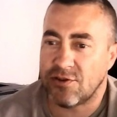
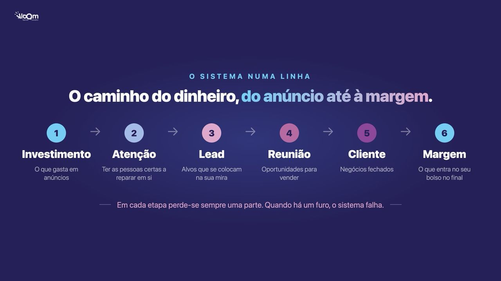
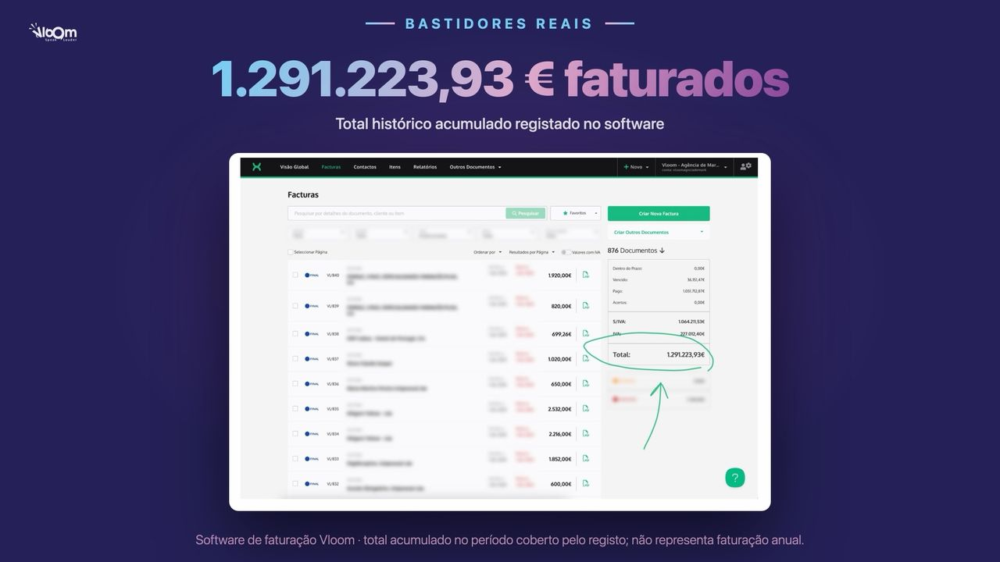
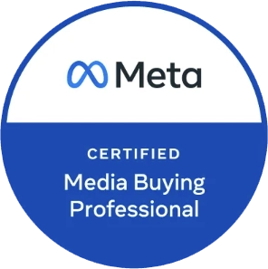
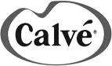
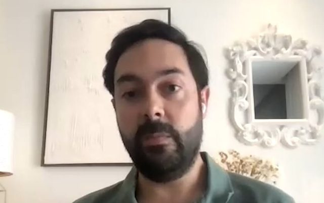

Quarta, 11 de novembro, 21h00 · começa daqui a …
Para donos e decisores de empresas que já investem em marketing
Num webinar gratuito de duas horas, ao vivo, mostro-lhe onde a sua aquisição de clientes perde dinheiro e o que corrigir primeiro. Com as contas feitas para a sua empresa.
Já está inscrito. Abrir a sala Zoom ·
Gratuito · ao vivo no Zoom · quarta, 11 de novembro, às 21h00 de Lisboa
Ao enviar, aceita a nossa Política de Privacidade.
Duas horas ao vivo no Zoom, com exercícios feitos com os seus números.
Começa daqui a

“Com a Vloom posso dizer que aumentei as vendas que tinha em pelo menos 200 a 300%.”
Conhece esta cena?
A campanha está no ar. O relatório mostra cliques, alcance e leads a entrar. No fim do mês, a faturação está igual à do mês anterior.
A agência diz que o problema é a equipa comercial. A equipa comercial diz que as leads não prestam. E ninguém consegue dizer onde é que o dinheiro ficou.
Se isto lhe soa familiar, a falha raramente está em si ou no seu produto. Está numa passagem que ninguém mediu.
Foi a oferta? A mensagem? O custo por lead? A rapidez do contacto? A comparência? O fecho?
Entre o euro que investe e o cliente que paga há seis passagens. Em cada uma perde-se sempre uma parte: nem toda a atenção dá uma lead, nem toda a lead dá uma reunião, nem toda a reunião dá um cliente.
A plataforma de anúncios só controla a primeira passagem. O resto está nas mãos da sua empresa. Quando uma delas falha, pagou para ser visto e não ganhou clientes.

A pergunta certa é outra: em que passagem perde os clientes que já pagou para atrair?
O que vai aprender
É o mesmo circuito que usamos todos os dias na Vloom. Começa numa conta simples e só depois chega ao anúncio.
Quanto vale um cliente, qual é a margem e quanto pode pagar para o adquirir sem perder dinheiro.
O mercado, a oferta, a mensagem, o anúncio e a página que transformam atenção em leads.
Responder em menos de 5 minutos e acompanhar cada lead durante 7 dias, até ela marcar e aparecer.
Preparar a reunião, perceber se a pessoa está pronta a comprar e responder às objeções.
Não nasceu num quadro branco
O nosso software de faturação, real. É este o sistema que nos pôs a faturar e é este que montamos nos clientes.

O diagnóstico
Escolhe-se uma plataforma e inventa-se um orçamento. Sem saber quanto vale um cliente e qual é a margem, ninguém consegue dizer quanto pode pagar por uma lead.
Ligar nos primeiros 5 minutos, em vez de aos 30, torna 100 vezes mais provável falar com a pessoa. Numa auditoria a 2.241 empresas, o tempo médio de resposta foi de 42 horas.
Fontes: Lead Response Management Study (Oldroyd, MIT) e Harvard Business Review, 2011.A média do mercado é de 1,3 tentativas por lead. Na Vloom seguimos um processo de 7 dias, com o canal, a mensagem e a hora definidos para cada dia.
Com 60% de comparência, 40 reuniões realizadas exigem 67 marcações. Subir a comparência traz crescimento sem comprar uma única lead a mais.
Leads contactadas tarde, mal qualificadas, pouco preparadas, que não comparecem ou que entram numa reunião sem diagnóstico. Cada um destes problemas tem uma correção diferente.
Quantas destas reconhece na sua empresa? No webinar vemos qual é a que mais lhe custa.
Faça já a primeira conta
Os números de partida são o exemplo que usamos no webinar. Troque-os pelos da sua empresa.
No webinar fazemos esta conta consigo ao vivo e vemos qual destes números é o mais barato de melhorar.
Quem lhe vai mostrar isto
Tiago Severino
Fundador da Vloom
Em 2014 andava por Lisboa a vender serviços de redes sociais com a câmara do telemóvel. Fiz palestras pequenas e trabalhos baratos. Aprendi muitas coisas da maneira mais cara: a falhar com o meu tempo e com o meu dinheiro.
Um dia lancei uma campanha de cerca de 30 € e apareceu um cliente. Pareceu-me magia. Com o tempo percebi que era um mecanismo. E um mecanismo pode ser estudado, repetido, medido e melhorado.
Desde então, a Vloom testou dezenas de ofertas, páginas, anúncios, sequências, guiões e processos comerciais. Pelo caminho faturou 1.291.223,93 €. Muitas ideias morreram em menos de 24 horas. O que ficou é o que lhe vou mostrar.

Algumas das marcas com quem trabalhámos

Antes de se inscrever
Nesses casos o primeiro trabalho é resolver isso. Não o vou incentivar a comprar tráfego para amplificar um problema.
Dentro das duas horas
Quem já aplicou
“Com a Vloom posso dizer que aumentei as vendas que tinha em pelo menos 200 a 300%.”
“Com a Vloom, logo no primeiro mês, tivemos mais de 100 leads.”

Bernardo CariaCAB, Clínica da Avenida“Hoje a minha principal fonte de renda são as aulas online, graças ao marketing digital da Vloom.”
“Trabalhar com a Vloom é diferente de trabalhar com outras agências: funciona maravilhosamente bem.”
“Acho que o resultado tem sido muito positivo. Não trocaríamos de agência.”
Porque no fim da sessão explico como é trabalhar com a Vloom, para quem quiser ajuda a montar isto na sua empresa. Prefiro dizer-lhe já.
Não precisa de comprar nada para aproveitar as duas horas. As contas e os processos que mostro ficam consigo, mesmo que nunca trabalhe connosco. Mesmo assim, a sessão tem de valer o seu tempo: esse é o compromisso.
Nada. O webinar é gratuito.
Quarta-feira, 11 de novembro, às 21h00 de Lisboa, no Zoom. Dura cerca de duas horas e tem exercícios curtos, por isso reserve o tempo completo.
Inscreva-se na mesma e diga-nos que prefere a gravação: enviamos-lhe a sessão completa.
Tenha à mão quatro números: valor de um cliente, margem, meta e taxa de fecho. Antes da sessão enviamos-lhe uma folha para os preencher.
Não. Vamos trabalhar a lógica que a tecnologia deve servir, sem ensinar botões. Se percebe a lógica, consegue executar com ajuda, contratar melhor e identificar depressa uma promessa vazia.
Já aplicámos este circuito em hotelaria, saúde, formação, seguros, retalho, restauração, automóvel e finanças. Serve para empresas com uma oferta validada que querem clientes novos todos os meses.
No fim explico como é trabalhar com a Vloom, para quem quiser. Pode sair antes disso e leva na mesma tudo o que foi ensinado.
Mais orçamento, mais um fornecedor e a esperança de que desta vez resulte.
Sabe quanto pode investir, quantas oportunidades precisa e qual é o próximo elo a corrigir.
Quarta, 11 de novembro, às 21h00 · começa daqui a
Tiago Severino